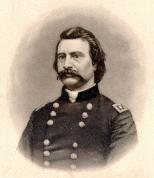

General Logan And The Fifteenth Army Corps

General John A. LoganOh, did you see the flying Johnnies
Anywhere about this place?
They picked up their guns and they left very sudden.
And soon we gave them chase.
The Rebs have heard of John A. Logan,
With the moustache on his face;
There's not a Rebel in the Dixie nation
But quickly gives him place.
Chorus: The Johnnies run, aha!
They'll fight us soon no more;
They must have heard that Logan is a-coming,
With the Fifteenth Army Corps.
Everybody has heard of Logan,
And his bonny boys in blue;
It does not need any stars to know 'em
They're known by what they do.
They don't go much on bread and butter,
For "hard tack's" all the go;
They're rough and ready - that's what's the matter.
They're going to Richmond too.
The Johnnies run, aha!
Our badge the U.S. Cartridge Box,
With the "forty rounds" to spare;
The ground is Red, White, Blue and Yellow
And about two inches square.
The Johnnies know the Fifteenth Corps,
They know the badge means war;
And when they see John Logan coming,
They'd rather not be "thar."
The Johnnies run, aha!
Our Generals are all good at fighting,
Brave Smith and Walcott too;
And when they see General Osterhaus coming,
The Rebs look mighty blue.
The two General Woods and General Hazen,
And gallant General Corse;
Better fighting men never went into battle,
Or whipped the Rebels worse.
The Johnnies run, aha!
Down the river in Mississippi,
We cleaned the Rebel's out;
They lost their niggers and bales of cotton,
And got a terrible rout.
We marched across to Chattanooga,
And put old Bragg to flight;
He found there was no use in trying,
The Fifteenth Corps to fight.
The Johnnies run, aha!
Joe Johnston tried to stand at Dallas,
But found it would not win;
Says he, "I cannot cope with Logan;
His Yankees fight like sin."
Oh, did you see our Johnny Logan,
As he rode along the line;
He waved his hat as he rode on a gallop.
And looked so mighty fine.
The Johnnies run, aha!
The Rebel works about Atlanta
Defied us for a while;
But when they charged on John A. Logan,
They learned his fighting style.
Says Johnny Hood, "I'll leave this city,
I can hold it now no more;
For Logan is in Jonesboro marching,
With his Fifteenth Army Corps."
The Johnnies run, aha!
And then we made a strike through Georgia,
Down to the Atlantic shore;
General Osterhaus took the place of Logan
In the Fifteenth Army Corps.
A lively time we had a Macon,
It was at Griswoldville;
The Georgia militia were slain by thousands,
For Walcott fought to kill.
The Johnnies run, aha!
You must have heard of General Hazen,
At Fort McAllister;
He took it with his Second Division,
Of the Fifteenth Army Corps.
In the oyster beds he found good living,
And we enjoyed it fine;
And then, oh what a jollification,
When we opened the "cracker line."
The Johnnies run, aha!
Old Hardee left Savannah city,
The Mayor asked us in;
We got thirty thousand bales of cotton,
Tobacco, Rum and Gin.
Away we went through South Carolina,
And all the railroads cut;
We charged the Rebels out of Columbia,
And they are running yet.
The Johnnies run, aha!
Says Beauregard, "I must leave Charleston,
For Sherman's in my rear;"
'Twas fun to see him strike for Richmond,
With a large "flea in his ear."
Cheraw, Fayetteville and Goldsboro,
They will remember well;
Says Beauregard, "Those blue coat Yankees,
Will drive us all to hell."
The Johnnies run, aha!
We'll vanquish Lee and Johnston's legions,
And soon we'll close the war;
Surround Jeff Davis in the Old Dominion,
And end Rebellion there.
For Grant has taken Lee and Richmond,
And Rebs won't fight any more;
Hurrah, boys, now for a jollification,
In the Fifteenth Army Corps.
The Johnnies run, aha!
Written at Gardner's Corners, South Carolina, Jan., 1865, by the light of a burning log-heap and published in ballad form at Goldsboro, N.C., and had an immense sale in the army.
From: War Songs Poems and Odes by R.W. Burt
Peoria Illinois 1909